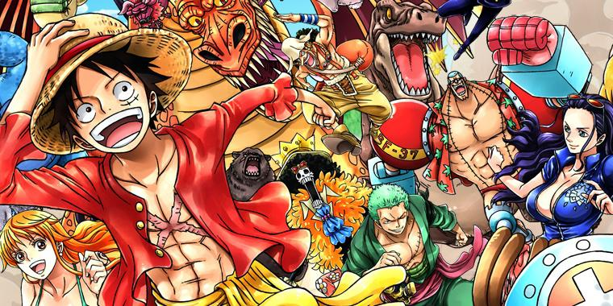
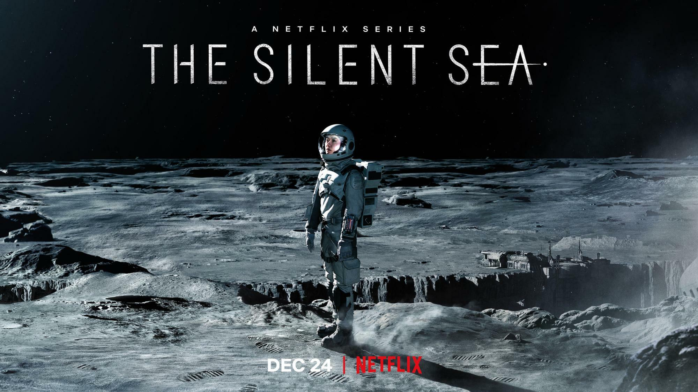
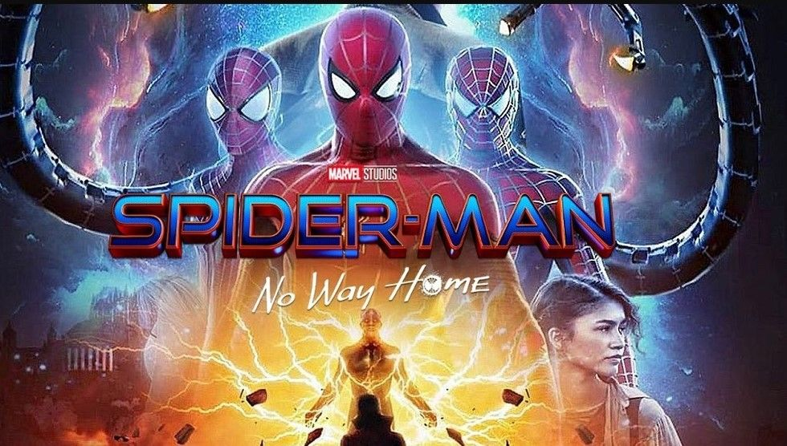

Eternals merupakan ras alien abadi dari planet Olympia yang datang ke Bumi ribuan tahun lalu untuk
melindungi umat manusia dari alien predator yang dikenal sebagai Deviants. Setelah bertahun-tahun
bebas
dari ancaman Deviants, para Eternals akhirnya harus mendengar berita tentang kembalinya makhluk
tersebut
dari Celestials, sosok pencipta yang sebelumnya muncul di film Guardians of the Galaxy. Eternals
merupakan sebuah kelompok yang kuat, kombinasi yang sempurna antara para pemikir dan pejuang. Mereka
berbagi energi kosmik yang sama, namun bermanifestasi menjadi kekuatan yang berbeda-beda bagi setiap
individu. Ketika menghadapi sebuah ancaman, kekuatan mereka saling melengkapi satu sama lain. Akan
tetapi, di luar itu, mereka terlihat seperti sebuah keluarga biasa yang saling mendukung satu sama
lain,
namun tetap memiliki perselisihan. Cerita dalam film ini juga mengangkat dua periode waktu yang
berbeda.
Periode pertama berlatar di masa lampau, ketika para Eternals bekerja sama sebagai tim yang tangguh
dan
menjadi sebuah keluarga. Periode kedua bercerita tentang masa sekarang, di mana mereka telah
terpecah
belah dan hidup dengan normal di antara manusia. Ketika Deviants datang dan kembali mengancam,
mereka
terpaksa harus kembali bersatu untuk menyelamatkan umat manusia...
All of Us Are Dead adalah serial drama Korea yang merupakan adaptasi dari Webtoon Naver, Now at Our
School karya Joo Dong-geun. Serial ini dapat disaksikan di Netflix yang sudah tayang sejak 28
Januari 2022. Serial ini dibintangi oleh Park Ji-hu, Yoon Chan-young, Cho Yi-hyun, Park Solomon, Yoo
In-soo, Lee Yoo-mi, Kim Byung-chul, Lee Kyu-hyung, dan Jeon Bae-soo.
All of Us Are Dead adalah serial drama Korea yang merupakan adaptasi dari Webtoon Naver, Now at Our
School karya Joo Dong-geun. Serial ini dapat disaksikan di Netflix yang sudah tayang sejak 28
Januari 2022. Serial ini dibintangi oleh Park Ji-hu, Yoon Chan-young, Cho Yi-hyun, Park Solomon, Yoo
In-soo, Lee Yoo-mi, Kim Byung-chul, Lee Kyu-hyung, dan Jeon Bae-soo.
Eternals
Eternals merupakan ras alien abadi dari planet Olympia yang datang ke Bumi ribuan tahun lalu untuk
melindungi umat manusia dari alien predator yang dikenal sebagai Deviants. Setelah bertahun-tahun
bebas
dari ancaman Deviants, para Eternals akhirnya harus mendengar berita tentang kembalinya makhluk
tersebut
dari Celestials, sosok pencipta yang sebelumnya muncul di film Guardians of the Galaxy. Eternals
merupakan sebuah kelompok yang kuat, kombinasi yang sempurna antara para pemikir dan pejuang. Mereka
berbagi energi kosmik yang sama, namun bermanifestasi menjadi kekuatan yang berbeda-beda bagi setiap
individu. Ketika menghadapi sebuah ancaman, kekuatan mereka saling melengkapi satu sama lain. Akan
tetapi, di luar itu, mereka terlihat seperti sebuah keluarga biasa yang saling mendukung satu sama
lain,
namun tetap memiliki perselisihan. Cerita dalam film ini juga mengangkat dua periode waktu yang
berbeda.
Periode pertama berlatar di masa lampau, ketika para Eternals bekerja sama sebagai tim yang tangguh
dan
menjadi sebuah keluarga. Periode kedua bercerita tentang masa sekarang, di mana mereka telah
terpecah
belah dan hidup dengan normal di antara manusia. Ketika Deviants datang dan kembali mengancam,
mereka
terpaksa harus kembali bersatu untuk menyelamatkan umat manusia...
One Piece

One Piece atau dalam Bahasa Jepang Wan Psu adalah sebuah seri manga Jepang yang ditulis dan
diilustrasikan oleh Eiichiro Oda. Manga tersebut telah dimuat di majalah Weekly Shnen Jump milik
Shueisha sejak 22 Juli 1997. Kemudian, manga One Piece juga telah dibundel menjadi 91 volume.
One Piece bercerita tentang petualangan, seorang anak laki-laki bernama Monkey D. Luffy yang
memiliki kemampuan tubuh elastis seperti karet setelah tidak sengaja memakan Buah Iblis.
Bersama kelompok bajak lautnya yang dijuluki Bajak Laut Topi Jerami Luffy menjelajahi Grand Line
untuk mencari harta karun terbesar di dunia yang terkenal dengan sebutan "One Piece". Ia pun
memiliki harapan untuk menjadi raja bajak laut berikutnya.
Silent Sea

The Silent Sea bercerita mengenai keadaan bumi di tahun 2075. Di masa itu, bumi tengah berada dalam
kondisi kekurangan makanan dan air.
Kondisi itu membuat sebuah tim ditugaskan untuk mengambil sampel misterius di sebuah stasiun
penelitian yang sudah lama terbengkalai.
Masalah yang muncul kemudian adalah, fakta bahwa stasiun penelitian tersebut berada di bulan, yang
dikenal sebagai laut sunyi atau The Silent Sea.
Berbagai masalah pun mulai terjadi ketika tim tersebut mendarat di bulan. Gong Yoo berperan sebagai
Han Yoon-Jae, pemimpin dari tim yang ditugaskan untuk mengambil sampel
Sementara itu, Bae Doona berperan sebagai Song Jian, seorang ahli astrobiologi yang ingin mengungkap
sebuah peristiwa lampau di stasiun penelitian terbengkalai tersebut.
Spiderman: No Way Home

Spider-Man: No Way Home mengisahkan dilema yang dirasakan Peter Parker (Tom Holland) setelah ia
difitnah dan identitasnya dibongkar oleh Mysterio (Jake Gyllenhaal) sebelum tewas dalam pertarungan
di London.
Informasi dari Mysterio itu semakin berkembang dengan penuh spekulasi juga tudingan setelah
diberitakan media sensasional The Daily Bugle yang dipimpin J Jonah Jameson (JK Simmons).
Spider-Man, yang identitasnya diungkap sebagai Peter Parker, dicap sebagai pembunuh dari Mysterio
dan membuat semua orang kesal dan membenci dirinya.
Peter Parker yang semula tak pernah dilihat oleh sekelilingnya mendadak menjadi pusat perhatian.
Rumahnya bahkan tak pernah sepi dipantau oleh media juga masyarakat. Ia pun harus menghadapi
berbagai tuntutan hukum usai pemberitaan tersebut.